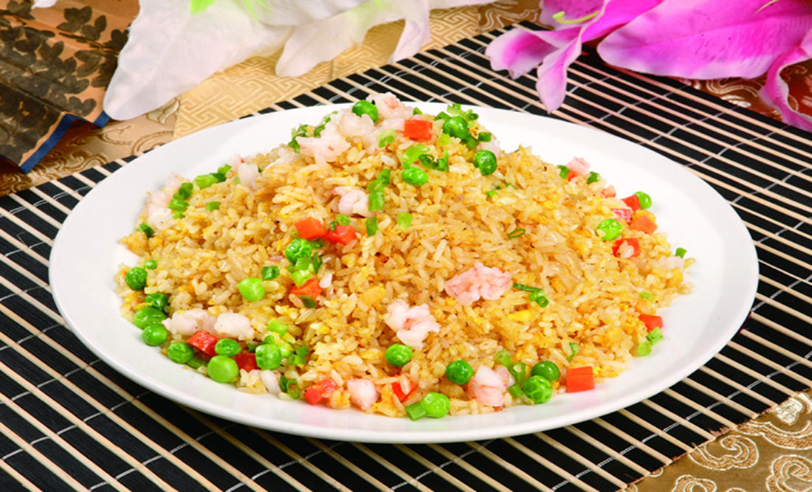
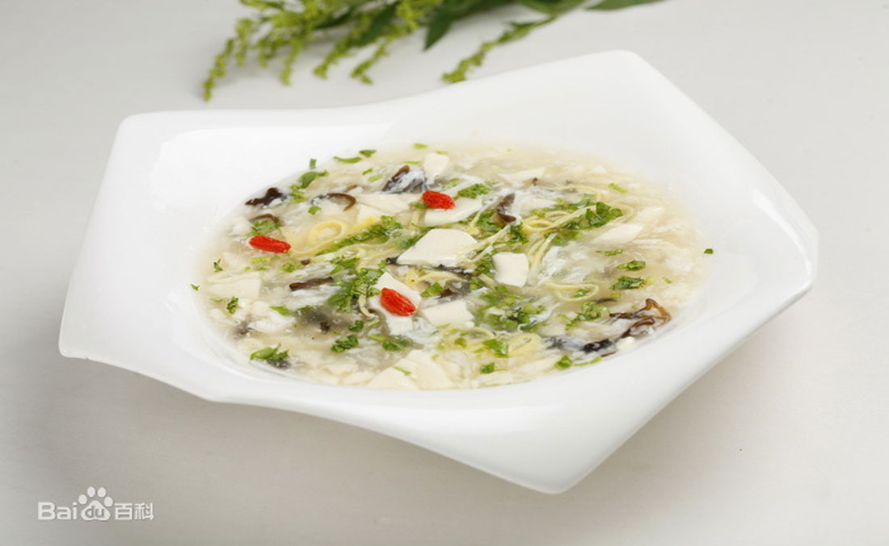
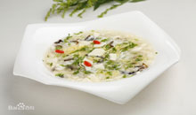

Cuisine Section
Lu cuisine
Features
- Wide selection of material
- Different cooking methods
- Domestic raw materials
Cantonese cuisine
Features
- Well balanced flavore
- Modest spices
- Freshness
- No use of fresh herbs in cooking
Huaiyang cuisine
Features
- Slightly sweet side
- Never spicy
- Meat base in cooking
- Pork
- freshwater fish
- other aquatic creatures



